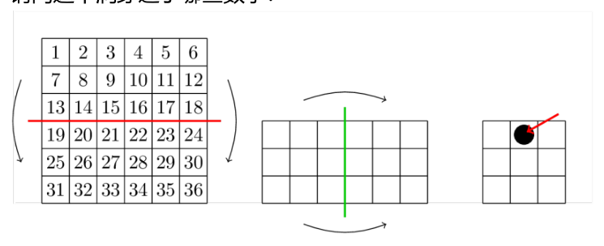

小乔把数字方阵按图折两次，再在箭头黑点处打孔。还会打到哪些数？
Joanna folds the number square twice as shown, then punches the black spot. Which numbers are also punched?

按按钮一步步操作。展开后点有洞的格子，记下数字，再选选项。
Use the buttons step by step. After unfolding, tap holed cells, note the numbers, then choose.
这些洞对应选项（点选）
Which option matches the holes? (tap)